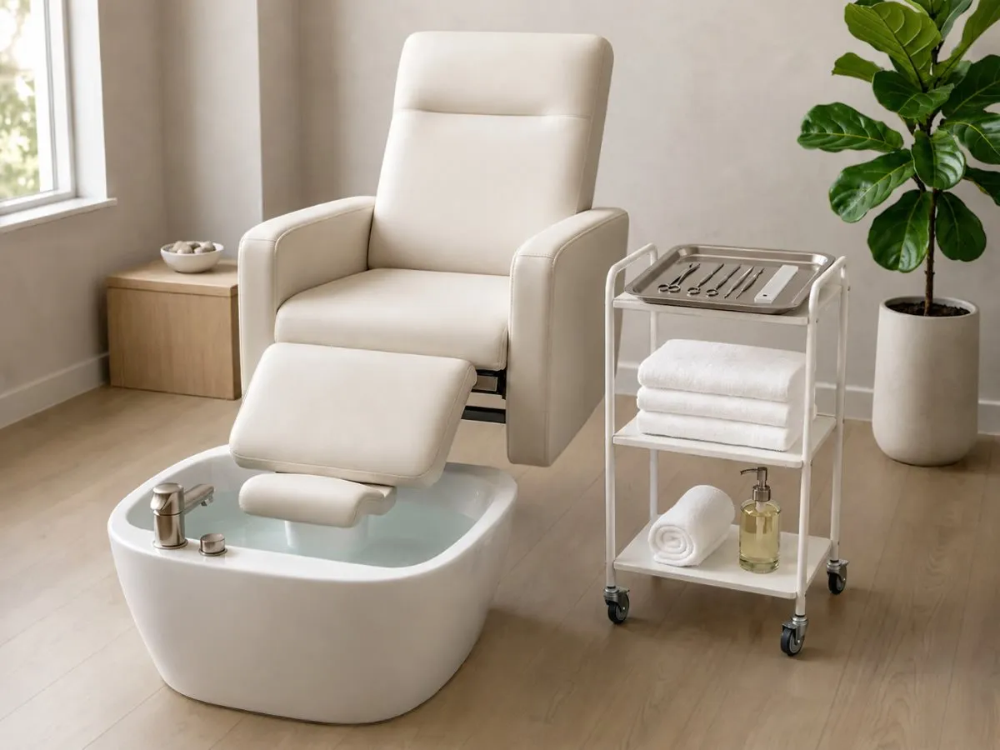

Pedicure in jouw wijk: van medisch pedicure in Oost tot Lent
Bijgewerkt op 22 november 2026.
Voor een pedicure ga je vaak terug, dus het is fijn als de praktijk dichtbij is. Daarom zetten we per wijk de pedicures op een rij die wij aanraden. We zetten er ook bij wie medisch pedicure is, voor als je diabetes of reuma hebt.
Wat een pedicure voor je voeten doet, lees je op onze hoofdpagina pedicure in Nijmegen.

Zo hebben we gekozen
We lazen in november 2026 de websites van de pedicures in onze bedrijvengids. In deze gids staan gediplomeerde pedicures, de meeste aangesloten bij brancheorganisatie ProVoet. Heb je diabetes of reuma, kies dan een medisch pedicure: dan vergoedt je verzekering soms een deel.
Centrum
De Voetsalon: al sinds 1991
In de Van Broeckhuysenstraat werkt pedicure Carolien van Meerten al sinds 1991. Ze knipt je nagels, haalt eelt en likdoorns weg en pakt kloven en ingegroeide nagels aan.
Ze is onder meer gespecialiseerd in de diabetische voet en staat in het kwaliteitsregister voor pedicures. Je gaat weg met voeten die zijn ingesmeerd met balsem.
Goed voor: wie in of bij het centrum woont.
Nijmegen-Oost
Pedicure Praktijk Vera: verzorging en gellak
Vera Timmermans werkt sinds 2018 als gediplomeerd pedicure. Je kunt bij haar terecht voor kalknagels, kloven, eelt en likdoorns, maar ook voor gellak op je teennagels.
Je parkeert gratis in de buurt. De praktijk zit op de eerste verdieping, en is alleen via de trap bereikbaar. Een afspraak maak je het makkelijkst via een appje.
Goed voor: wie ook mooie teennagels wil.
Pedicure By Carla: na veertig jaar in de zorg
Carla werkte ruim veertig jaar als verpleegkundige in het ziekenhuis, en koos daarna bewust voor een vak waarin ze de tijd voor je heeft. Hygiëne staat bij haar hoog.
In haar praktijk aan de Van Haapsstraat neemt ze rustig de tijd voor je voeten.
Goed voor: wie graag rustig geholpen wordt.
Zuid en Hatert
Pedicare Nijmegen: medisch, en ook aan huis
Pedicare is een medische pedicuresalon met vijftien jaar ervaring, aangesloten bij ProVoet. Je kunt er terecht met een ingegroeide teennagel, likdoorns of schimmelnagels.
De salon zit op de begane grond. Kom je liever niet de deur uit, dan komt een ambulante pedicure bij je thuis.
Goed voor: wie minder goed ter been is.
Pedicure Hoefnagel: in Brakkenstein
Eduard Hoefnagel heeft een praktijk aan huis aan de Scheidingsweg. De basisbehandeling bestaat uit reinigen, nagels knippen, eelt verwijderen en tot slot polijsten en incrèmen.
Hij is aangesloten bij ProVoet. De praktijk is rolstoeltoegankelijk, en je kunt er parkeren.
Goed voor: wie in Brakkenstein of Heijendaal woont.
Dukenburg en Lindenholt
Ezgi Medisch Pedicure: bij diabetes of reuma
In Weezenhof heeft Ezgi sinds 2022 een eigen praktijk als medisch pedicure. Ze kijkt met je naar de oorzaak van je klachten, zodat ze niet steeds terugkomen.
Je kunt er terecht voor nagelreparatie, een nagelbeugel bij ingroeiende nagels en een test op schimmelnagels. Bij diabetes of reuma let ze extra op je voeten.
Goed voor: wie diabetes of reuma heeft.
Salon Jessica: gelak en een kop koffie
Jessica heeft sinds 2014 een kleine, rustige pedicuresalon, en geeft het vak ook door als docent. Ze helpt je bij eelt, likdoorns en ingegroeide nagels, maar ook met een voetmassage.
Je kiest uit veel kleuren gelak. De salon ligt op de begane grond, en je parkeert gratis.
Goed voor: een verzorgende behandeling.
Lory Pedicure: ook 's avonds en in het weekend
Aan de Heeskesacker pakt gediplomeerd pedicure Loredana eelt, kloven, likdoorns en kalknagels aan. Bij je eerste bezoek neemt ze ruim de tijd om je voeten te bekijken.
Je komt alleen op afspraak, ook 's avonds en in het weekend. De salon doet mee aan de Meedoenregeling van de gemeente Nijmegen.
Goed voor: wie overdag werkt.
Nijmegen-Noord en Lent
Pedicure Nijmegen Noord: bij De Klif
Vlak bij De Klif heeft Wendelien van de Top een praktijk aan huis. Ze werkt met schone instrumentensets en nieuwe mesjes bij elke behandeling.
Je kiest een volledige behandeling of een kortere deelbehandeling, bijvoorbeeld voor een likdoorn. Je boekt online.
Goed voor: wie in de Waalsprong woont.
Pedicure Praktijk Lent: met voetreflex
Leonie Turnhout heeft een achtergrond in de zorg en volgde een cursus voetreflexologie. Je kiest een basisbehandeling, een plusbehandeling met scrub en voetmassage, of een behandeling voor één klacht.
Ze werkt met producten op natuurlijke basis, die je ook voor thuis kunt kopen.
Goed voor: een behandeling met een massage erbij.
Ook goed
- Pedicure By Cindy aan de Kleine Boel, ook 's avonds en in het weekend.
- By Millycent aan de Vuurvlindertjesstraat, medisch pedicure.
- Pijn bij het lopen of klachten aan knie of rug door je voeten? Dan is een podotherapeut zoals Podotherapie Ottens of Podotherapie Driessen een betere keuze.
Meer over medische voetzorg lees je in pedicure voor diabetici in Nijmegen.
Meer in onze gids pedicure in Nijmegen.
Veelgestelde vragen
Wat is het verschil tussen een pedicure en een medisch pedicure?
Een medisch pedicure heeft een extra opleiding voor voeten met een risico, bijvoorbeeld door diabetes of reuma. Bij Pedicare en Ezgi werk je met een medisch pedicure.
Wordt een pedicure vergoed?
Een gewone pedicure meestal niet. Heb je diabetes of reuma, dan vergoedt je verzekering soms een deel van de behandeling bij een medisch pedicure. Vraag het na bij je verzekeraar.
Komt er een pedicure aan huis in Nijmegen?
Ja, Pedicare in Hatert heeft een ambulante pedicure die bij je thuis komt.
Waar kan ik 's avonds naar de pedicure?
Bij Lory Pedicure in Lindenholt en Pedicure By Cindy kun je ook 's avonds en in het weekend een afspraak maken.